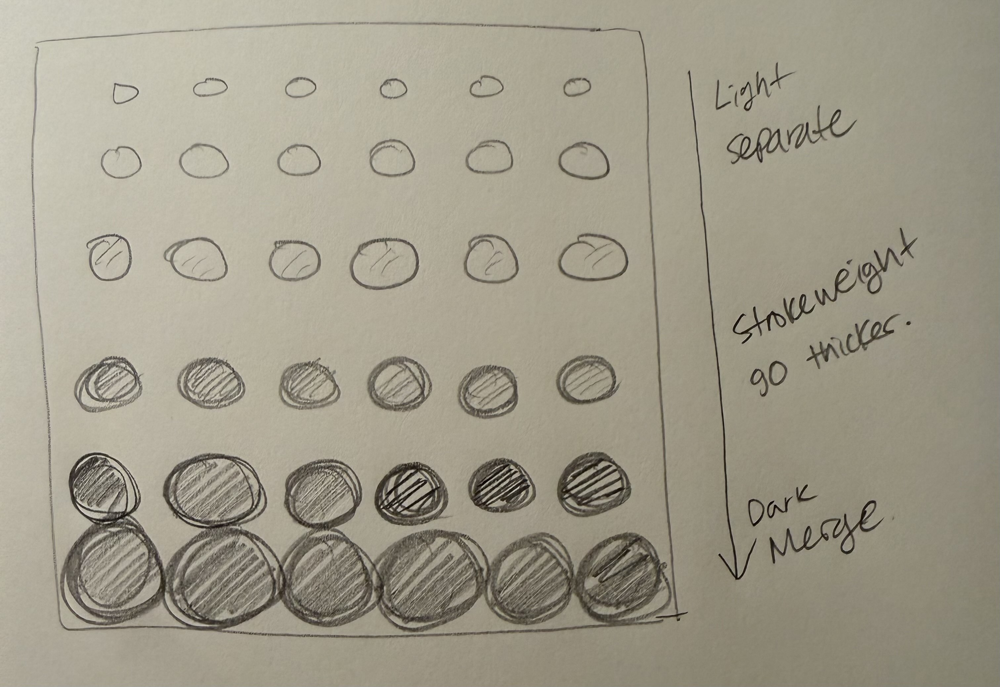

My initial drawing shows a progressive movement from small, light circles to enlarged, dark patterns that ultimately merge as they reach the bottom of the canvas. Inspired by Vera Molnar and Yayoi Kusama, I wanted to work with a familiar shape circle, to create a pattern with a surprising contrast. Inspired by Kusama’s signature color palette, I started with subtle lines and soft tones, gradually building up their intensity until they merged at the bottom.
Using the p5.Polar library turned out to be a really interesting experience. I initially forgot that p5.Polar is inherently designed for creating circular patterns, so seeing the final result after applying it to my drawing was quite a surprise yet I actually loved the outcome! It still managed to capture the core idea of my original sketch, where subtle, soft tones progressively intensify and become strong. Moreover, it drastically reduced the number of lines of code compared to my initial version, making it somewhat easy to achieve that expression by just tweaking a few lines of code (although it was hard to figure out which line of code I had to tweak...!).
I also noticed its limitations... relying solely on the p5.Polar library restricts you strictly to circular or radial patterns, making it less flexible if you want to explore other types of shapes or patterns. However, combining the library with for loops creates a powerful synergy, far more efficient than figuring out everything through a tedious 'brute force' method. Once you grasp the logic, I know it will significantly save time and streamline the coding process. With this assignment, using for loops and the library together allowed me to experiment with patterns dynamically, which a 'brute force' method could never account for.
